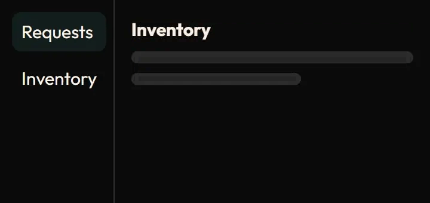
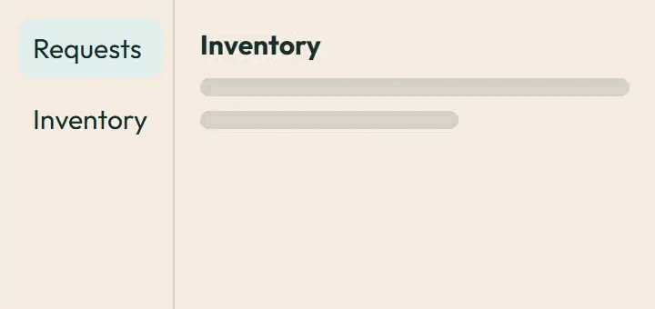

Route transition
Click a link: only the content region changes (the sidebar stays put). Pick a direction to see the settle distance change. Under prefers-reduced-motion: reduce the motion is removed and the end state shows at once.
Image previews
Static posters are shown first. Play starts an animated image; Pause restores its poster. Reduced motion keeps posters visible.

